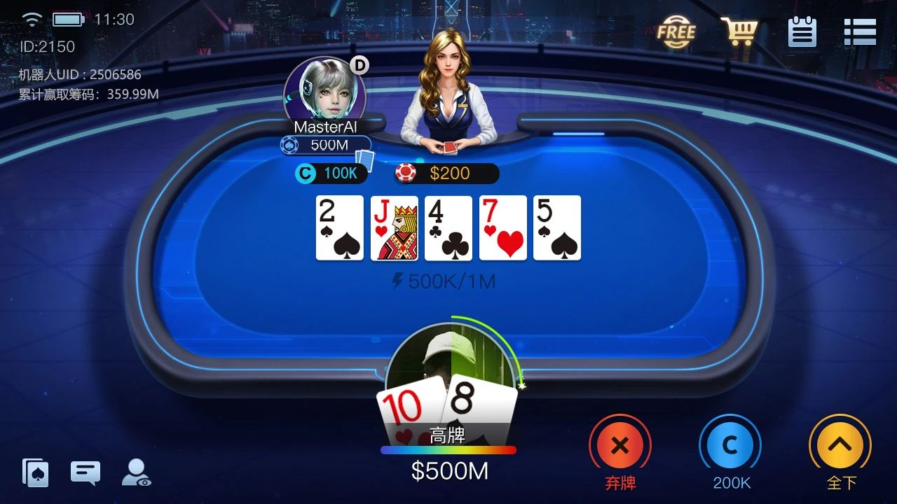

多人牌局狀態
處理座位、籌碼、公共牌、下注輪、合法動作和終局收益。

處理座位、籌碼、公共牌、下注輪、合法動作和終局收益。
資訊集遺憾、平均策略、MCCFR 採樣與多人迭代。
按目前狀態輸出 Fold、Call 或 Raise，供延遲與策略測試。
引擎從私牌、盲注與座位開始，處理翻牌前、翻牌、轉牌及河牌。每個行動點都會建立資訊集、生成合法動作並依平均策略選擇；牌局結束後再利用收益更新遺憾和策略。
`Pluribus` 與 `State` 負責多人策略和牌局狀態；`Trainer` 與 `InfoNode` 管理自我博弈、遺憾值及平均策略；`GamePool` 和 `TaskExecutor` 處理並行任務；`CardAbst` 和 `CardCluster` 支援牌力抽象。

訓練規模與延遲數字需在清楚記錄硬體、模型和玩家數的條件下重新驗證。
適用於 CFR/MCCFR、不完全資訊博弈、多人撲克 AI 和 C++ 整合研究。請先審查授權與第三方元件，並遵守所在地法律、服務條款及公平競技規則。